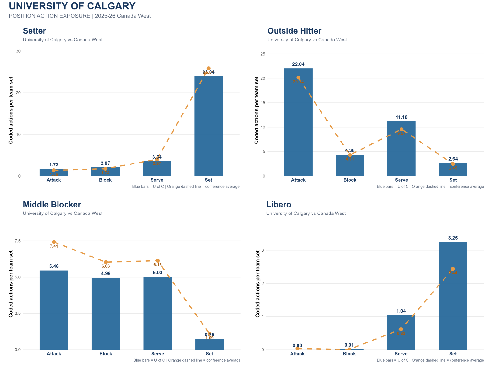

Understanding position-specific workload patterns
The purpose of this analysis is to estimate the volume of position-specific volleyball actions performed across the conference, expressed as coded actions per team set. This creates a common rate for comparing teams that played different numbers of sets.
How to read the comparisons
Each bar represents a team's average coded actions per team set for a particular position and action. The orange dashed line is the pooled Canada West average, calculated as total conference actions divided by the 1,038 team-set appearances. A bar to the right of the line indicates a higher coded-action rate than the pooled benchmark; a bar to the left indicates a lower rate.
How action exposure differs by position
The four conference charts show team-level rates for setting, attacking, blocking and serving. Positions are shown separately so that each role can be interpreted in its own technical context.
Set exposure
All 14 teams
Attack exposure
All 14 teams
Block exposure
All 14 teams
Serve exposure
All 14 teams
University of Calgary Dinos
The Dinos profile places Calgary's position-specific action rates beside the pooled Canada West benchmark. It provides a quick way to identify where Calgary sits above, near or below the conference rate.

Setter
Calgary's setter profile is close to the conference benchmark for attack and block actions. Set volume is slightly below the pooled average, while serve rate is also close to the benchmark.
Outside hitter
Calgary's outside hitters show a higher attack rate than the conference average in this comparison. Block and serve rates are below the pooled benchmark, while set involvement is also lower.
Middle blocker
Calgary's middle blocker attack and block rates are below the pooled conference averages. Serve rate is also below the benchmark. This describes coded action volume and should be interpreted alongside the team's tactical system and player availability.
Libero
Calgary's libero has higher coded set involvement than the pooled average in this chart. Attack and block values are near zero, which is consistent with the role's primary responsibilities in this dataset.
These observations describe the plotted rates only. They are not judgments of performance quality, player fitness or injury risk.
Turning the numbers into useful questions
The strongest use of these comparisons is to guide follow-up questions, not to treat a higher rate as automatically better or worse.
1. Identify higher-volume roles
Use the position panels to identify roles and teams with higher coded attack, block, serve or set involvement per set. This can help prioritize which positions warrant a closer review of match demands.
2. Add match context
Compare the rates with rotations, opponent quality, match length, substitutions, player availability and tactical choices. Team averages can conceal large differences between individual athletes.
3. Validate jump-related demands
For a true jump-load estimate, review video or use a validated jump-monitoring method to determine which attacks and blocks involved a jump, how many athletes participated, and whether jump sets or jump serves occurred.
4. Use the benchmark as context
The pooled conference line is a descriptive reference point, not a target or ideal workload. A team's tactical style and personnel can reasonably produce a different action profile.
What was counted—and what was not
The analysis was built from coded play-by-play actions in 140 Canada West DVW files. Team rates use each team's total sets played as the denominator.
Collect
Parse the 140 regular-season DVW files and retain coded attack, block, serve and set actions.
Assign positions
Map athletes to Setter, Outside Hitter, Middle Blocker and Libero. Opposite/right-side roles are grouped with Outside Hitter for this analysis.
Normalize
Calculate each team's action total for a position and action, then divide by that team's total sets played.
Key limitations
- Coded actions are not physical jump events. An attack or block code does not prove that the athlete jumped.
- Serve types matter. Only explicitly identified jump-serve codes can be treated as confirmed jump-serve proxies. The overall serve chart includes coded serves generally and must not be read as jump serves per set.
- Setting is not a jump count. The dataset does not reliably identify jump sets, so set actions are shown as technical involvement rather than jump exposure.
- Block participation is not individual jump count. A coded block action may involve multiple blockers, and the file does not establish how many players jumped on each play.
- Team rates are not individual athlete loads. Individual participation, substitutions and time on court are not reflected in the team-set denominator.
- Benchmark is descriptive. The pooled average is weighted by team-set appearances and should not be interpreted as a recommended workload threshold.
Conclusion
This analysis provides a conference-wide baseline for understanding how coded volleyball actions are distributed across positions and teams. The University of Calgary comparison shows where the Dinos' action profile differs from the pooled Canada West pattern. Used alongside video, athlete-level participation data and jump-specific monitoring, these findings can support a more complete understanding of positional workload.
Prepared from the 2025–26 Canada West DVW action dataset and the supplied team comparison graphics.